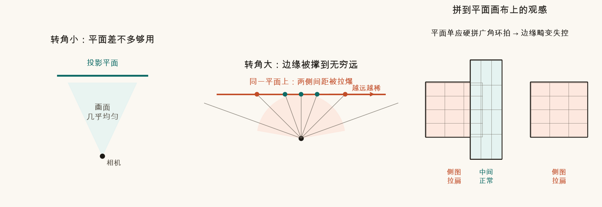
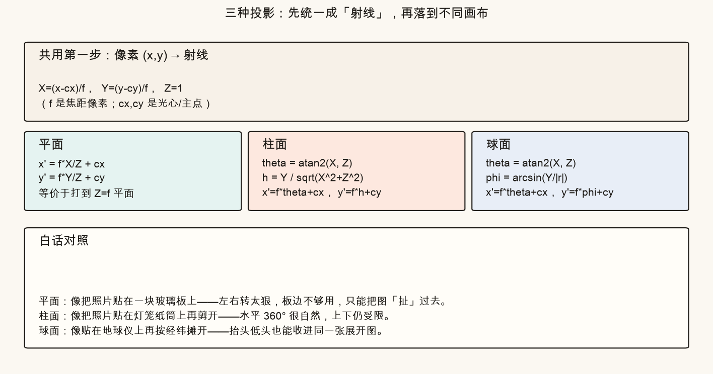
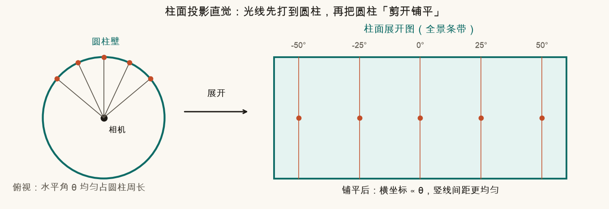
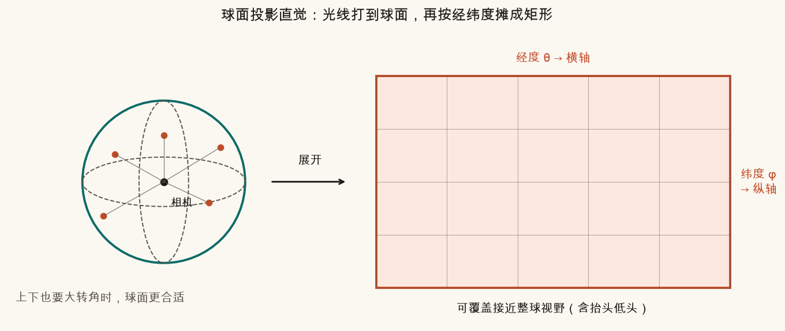
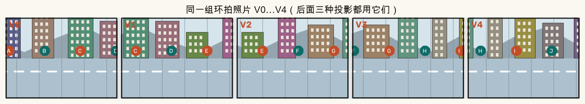
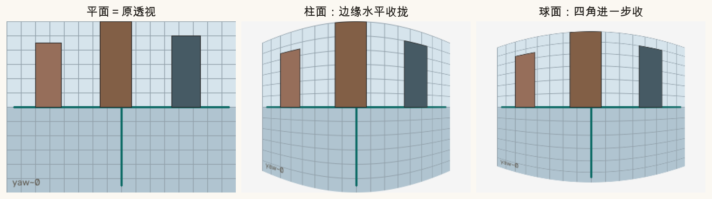
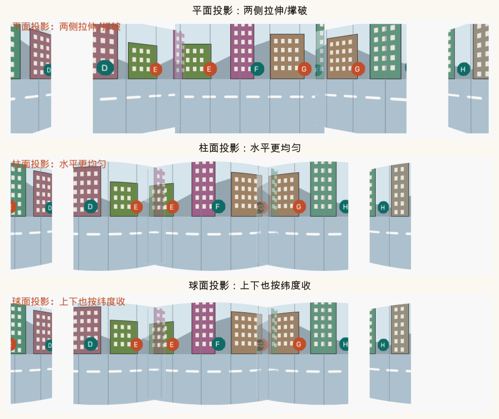
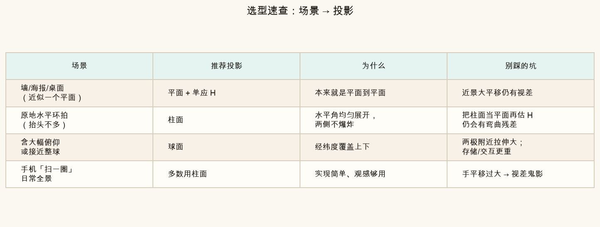

第 9 篇 · 全景几何 · 约 50 分钟
第 3–8 篇把两图、多图用单应性「贴」到同一张平面画布。原地转圈拍一圈时，这块平面会被撑破。这一篇换三种「收纳盒」——平面、柱面、球面——看同一组照片在不同盒子里长什么样，并学会按场景选型。
你站在原地，只转动身体，从左到右拍五张。每张之间大概转 20°～40°。若仍用第 3 篇的做法——估一张单应性 H，把所有图 warp 到同一块平面画布——中间几张往往还好看，两侧却会：
这不是匹配坏了，而是收纳方式选错了：平面适合「大家差不多朝同一个方向看一块墙」；不适合「绕自己转一圈」。

记忆口诀：平面坐标大致是 f · tan(θ)。θ 从 0° 到 80°，tan 从 0 飙到约 5.7；再靠近 90° 就冲向无穷。柱面用的是 f · θ（弧度），80° 只是约 1.4，永远有限。
三种投影表面差别很大，底层却共用一步：把图像上的像素想成「从相机光心射出的一条射线」。
设图像宽高为 W、H，主点（光心投影）约在图像中心 (cx, cy)，焦距是 f（单位：像素）。像素 (x, y) 对应的方向可以写成：
X = (x − cx) / f， Y = (y − cy) / f， Z = 1
白话：
f 越大，同样像素偏移对应的角度越小——像望远；f 越小，同样像素偏移对应的角度越大——像广角；f 当成一个可调的「虚拟焦距」。有了射线 (X, Y, Z)，三种投影只是问：这条射线先打到什么形状的屏上，再把屏展开成一张矩形图。

平面投影就是普通针孔相机在做的事：在相机前方放一块与光轴垂直的玻璃板（平面 Z = f），光线穿过玻璃留下痕迹。
x′ = f · X / Z + cx， y′ = f · Y / Z + cy
若射线已经是归一化的 Z=1，就是 x′ = f X + cx。换用水平角 θ 来说：
x′ ≈ f · tan(θ) + cx
优点：直线还是直线；看海报、墙面、桌面最自然；和第 3 篇单应性无缝衔接——两平面之间正好一个 H。
缺点：水平视场一大，边缘按 tan 拉伸；环拍超过大约 60°～90° 总跨度就难受；接近 180° 时数学上直接炸掉。
所以「平面拼接」不是错，而是适用范围窄：场景近似共面、相机运动近似纯旋转且转角不大，或你只拼两三张广角不大的图。
想象相机在圆柱轴心。光线先打到圆柱内壁，再把圆柱沿一条竖缝剪开、铺成矩形——得到柱面展开图。

公式（半径取为焦距 f）：
θ = atan2(X, Z)， h = Y / √(X² + Z²)
x′ = f · θ + cx， y′ = f · h + cy
白话拆开：
2πf 像素——有限、可算。典型用途：手机「扫一圈」全景、户外水平环拍、大多数消费级全景 App。上下抬头不多时，柱面几乎是默认答案。
代价：本来透视里笔直的水平线，在柱面展开里可能变弯；若你先柱面投影，再错误地用「平面单应」去硬拼，仍会残留弯曲误差——正确做法是在柱面坐标里用更接近平移/旋转的模型对齐。
柱面管水平，不管「猛抬头、猛低头」。若还要收进天空和脚边，就换球面：光线打到单位球，再按经度 θ、纬度 φ 摊成矩形（类似世界地图）。

公式：
θ = atan2(X, Z)， φ = arcsin(Y / ‖r‖)
x′ = f · θ + cx， y′ = f · φ + cy
和柱面比：横坐标仍是经度；纵坐标改成纬度角 φ，不再用线性的 h。于是上下大转角也能进同一张展开图，但竖直方向的直线也可能变弯，四角收得更明显。
典型用途：接近 360×180 的全天球、含大幅俯仰的多行拍摄、VR 全景底图。
脚本造了一条横向超宽「街景」，裁出五张重叠的环拍照片 V0…V4。后面三种投影都用这一组，只换「收纳盒」。

assets/images/ch09_pano_strip.png。先看单张网格图被三种投影「重新采样」后的形状，建立肌肉记忆：

再看五张一起叠到各自画布上的示意（未做精细接缝，只为比几何）：

assets/images/ch09_compare_three.png。对照时请盯两件事：（1）两侧楼宽是否被拉爆；（2）路面与楼边是直还是弯。选型就是在「保直线」和「保大视场」之间做取舍。

| 场景 | 推荐 | 为什么 | 别踩的坑 |
|---|---|---|---|
| 墙 / 海报 / 桌面（近似一个平面） | 平面 + 单应 H | 本来就是平面到平面 | 近景大平移仍有视差 |
| 原地水平环拍（抬头不多） | 柱面 | 水平角均匀展开，两侧不爆炸 | 把柱面结果再当平面硬估 H |
| 含大幅俯仰或接近整球 | 球面 | 经纬度覆盖上下 | 两极拉伸大；存储与交互更重 |
| 手机「扫一圈」日常全景 | 多数用柱面 | 实现简单、观感够用 | 手平移过大 → 视差鬼影（第 11 篇） |
下方画布在模拟「相机看前方网格房间」。切换投影类型，或拖动焦距滑块：
source .venv/bin/activate # 若尚未激活
MPLCONFIGDIR=/tmp/mpl-cache python code/ch09_projection.py会写出 ch09_planar_blowup.png、ch09_cylinder_idea.png、ch09_sphere_idea.png、ch09_compare_three*.png 等课文对照图，以及你的 ch09_my_*.png。结尾打印「自检通过」。
打开 code/ch09_projection.py，只改文件顶部两个参数：
MY_FOCAL 从 220 改成 120，再运行。广角感更强，柱面/球面相对平面的「收边」更明显；看 ch09_my_compare.png。MY_FOCAL 改成 360（更望远）。三种投影差异变小——转角不大时平面也能凑合，和课文开头的结论对上。MY_YAW_DEG 从 38 改成 55。相邻帧水平夹角变大，平面画布两侧更容易被拉开；柱面仍相对稳。MY_YAW_DEG = 5。几乎不转头时，三种结果会非常接近——说明「投影选型」是被视场推着走的，不是永远越复杂越好。平面横坐标大致正比于 tan(θ)。θ→90° 时 tan→∞，点被映到无穷远，有限画布装不下，边缘严重拉伸。
横坐标对应水平角 θ（再乘焦距 f）。竖直方向按 h = Y/√(X²+Z²) 映射，不混入水平角，所以竖直线在展开图里仍近似竖直。
拍摄含大幅俯仰（抬头看天、低头看地），或要覆盖接近整球视野时。柱面上下能力有限。
一般不需要。场景近似平面时，平面 + 单应性最合适，还能保住直线。柱面反而可能把直线弄弯。
变弱。f 大相当于望远，同样像素范围对应更小角度，柱面/球面相对平面的差异减小。
投影只解决「放到哪张画布」。重叠区仍可能露缝、重影、亮度跳变。下一篇讲接缝寻找与图像融合：羽化、多频段、图割找缝。